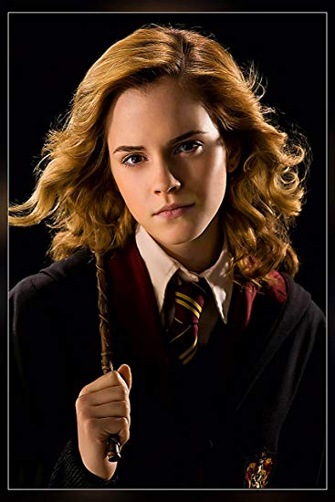
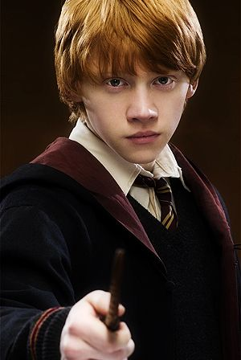
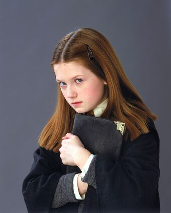
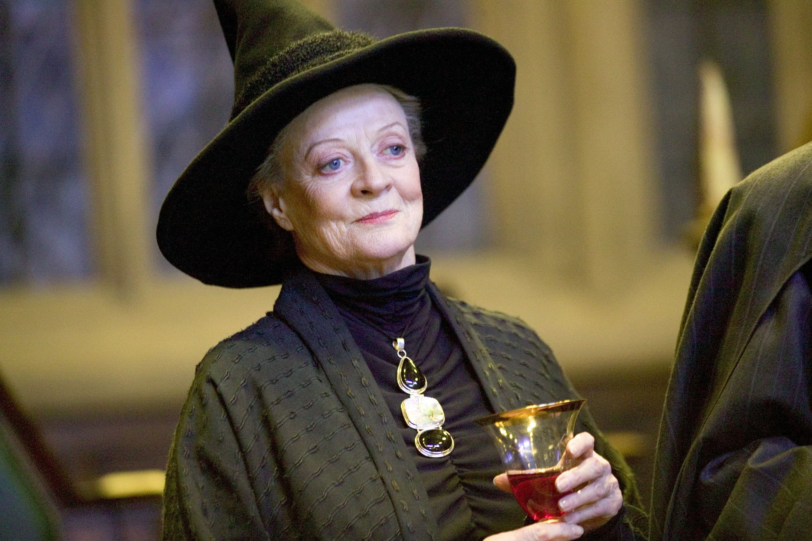
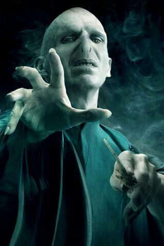

Hermione Granger
Minister Hermione Jean Granger (b. 19 September, 1979) was an English Muggle-born witch born to Mr and Mrs Granger. At the age of eleven, she learned about her magical nature and had been accepted into Hogwarts School of Witchcraft and Wizardry. Hermione began attending Hogwarts in 1991 and was Sorted into Gryffindor House. She possessed a brilliant academic mind and proved to be a gifted student in almost every subject that she studied. Hermione played a significant role in many other battles of the Second Wizarding War, as well. In 1997, she fought in the Battle of the Seven Potters, alongside the Order of the Phoenix. Hermione and Ron decided not to return to Hogwarts for their final year of studies, instead choosing to accompany Harry on his quest to find and destroy Lord Voldemort's Horcruxes, a quest in which her several of her actions were essential. She destroyed Hufflepuff's Cup, a Horcrux, with Ron using a basilisk fang found in the Chamber of Secrets. Hermione then fought in the Battle of Hogwarts, helping in the defeat of the Death Eater who tortured her, Bellatrix Lestrange.
Ron Weasley
Ronald Bilius "Ron" Weasley (b. 1 March, 1980) was an English pure-blood wizard, the sixth and youngest son of Arthur and Molly Weasley (née Prewett). He was also the younger brother of Bill, Charlie, Percy, Fred, George, and the elder brother of Ginny. Ron and his brothers and sister lived at the Burrow, on the outskirts of Ottery St Catchpole. Ron began attending Hogwarts School of Witchcraft and Wizardry in 1991 and was Sorted into Gryffindor House. He soon became close friends with fellow student Harry Potter and later Hermione Granger. Together, they faced many challenges during their adolescence, including keeping the Philosopher's Stone from Professor Quirinus Quirrell, rescuing Ginny from the Basilisk of the Chamber of Secrets, saving Harry's godfather Sirius Black from the Dementors of Azkaban, guiding Harry through the Triwizard Tournament, forming Dumbledore's Army and fighting in numerous battles of the Second Wizarding War: including the Battle of the Department of Mysteries (1996), Battle of the Astronomy Tower (1997), and Battle of the Seven Potters (1997). Ron also became a Gryffindor prefect and a Keeper on the Gryffindor Quidditch team during his fifth year at Hogwarts.
Ginny Weasley
Ginerva Molly "Ginny" Potter (née Weasley) (b. 11 August, 1981), occasionally known as Gin, was an English pure-blood witch, the youngest of Arthur and Molly Weasley's (née Prewett) seven children, and the first female to be born into the Weasley line for several generations. She and her older brothers grew up in The Burrow on the outskirts of Ottery St Catchpole in Devon. Ginny attended Hogwarts School of Witchcraft and Wizardry from 1992-1999 and was sorted into Gryffindor House. During her first year, she developed a long-standing crush on Harry Potter and came under the influence of the memory of Tom Riddle's sixteen-year-old self. The memory was preserved in a diary, which forced Ginny to re-open the Chamber of Secrets, endangering the lives of many students, including herself. Following that ordeal, Ginny grew into a confident young woman, becoming an important member of Dumbledore's Army, an organisation taught and led by Harry Potter in her fourth year.
Albus Dumbledore

Professor Albus Percival Wulfric Brian Dumbledore, O.M. (First Class), Grand Sorc., D. Wiz., X.J. (sorc.), S. of Mag.Q. (c. Summer 1881 – 30 June, 1997) was an English half-blood wizard, who was the Defence Against the Dark Arts Professor, later the Transfiguration Professor, and later Headmaster of Hogwarts School of Witchcraft and Wizardry. Professor Dumbledore also served as Supreme Mugwump of the International Confederation of Wizards (?–1995) and Chief Warlock of the Wizengamot (?–1995; 1996–1997). He was a half-blood, Muggle-supporting wizard considered to have been the greatest wizard of modern times, perhaps of all time. The son of Percival and Kendra Dumbledore, and the elder brother of Aberforth , Aurelius and Ariana. His father died in Azkaban when Dumbledore was young, while his mother and sister were later accidentally killed. His early losses greatly affected him early on, even at his death, but, in turn, made him a better person.
Minerva McGonagall
Professor Minerva McGonagall, O.M. (First Class), was a Scottish half-blood witch, the only daughter of Muggle Robert McGonagall and witch Isobel Ross. She also was the older sister of Malcolm and Robert Jr. Minerva attended Hogwarts School of Witchcraft and Wizardry and was Sorted into Gryffindor House, but it took the Sorting Hat five and a half minutes to decide if she was Gryffindor or Ravenclaw, which made her a Hatstall. During her seventh year, she was appointed Head Girl. After her education, Minerva worked for two years at the Ministry of Magic and later returned to Hogwarts, where she became Head of Gryffindor House and the Transfiguration professor. Though she wasn't a member of the Order of the Phoenix during the First Wizarding War, Minerva greatly helped the Ministry of Magic's resistance through spying Death Eaters and bringing the Aurors crucial information on their activities.
Severus Snape

Professor Severus Snape (9 January, 1960 – 2 May, 1998) was an English half-blood wizard serving as Potions Master (1981-1996), Defence Against the Dark Arts professor (1996-1997), and Headmaster (1997-1998) of the Hogwarts School of Witchcraft and Wizardry as well as a member of the Order of the Phoenix and a Death Eater. His double life played an extremely important role in both of the Wizarding Wars against Voldemort. The only child of Muggle Tobias Snape and Gobstones witch Eileen Snape (née Prince), Severus was raised in the Muggle dwelling of Spinner's End, which was in close proximity to the home of the Evans family, though in a poorer area. He met Lily and Petunia Evans when he was nine and fell deeply in love with Lily, becoming a close friend of hers.
Lord Voldemort
Tom Marvolo Riddle (31 December 1926 – 2 May 1998), later known as Lord Voldemort or alternatively as You-Know-Who, He-Who-Must-Not-Be-Named, or the Dark Lord, was an English half-blood wizard considered to have been the most powerful and dangerous Dark Wizard of all time. He was amongst the greatest wizards to have ever lived, often considered to be the second most powerful wizard in history, his only superior being Albus Dumbledore. The only child and son of Tom and Merope Riddle (née Gaunt) via the coercive use of a love potion, Riddle was raised in the Muggle-run Wool's Orphanage after his father abandoned his new family on the streets of London when the potion's influence was lifted, and his mother died moments after giving birth to and naming him after his father and maternal grandfather, Marvolo Gaunt.